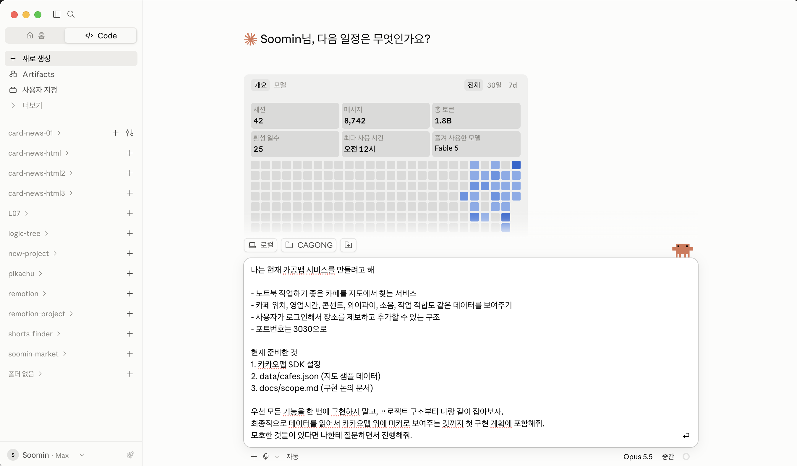
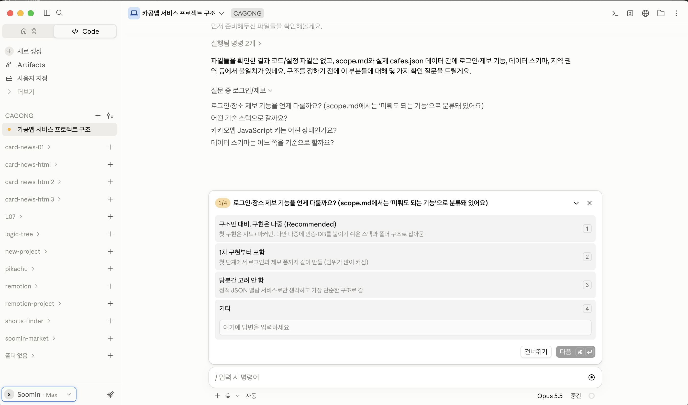
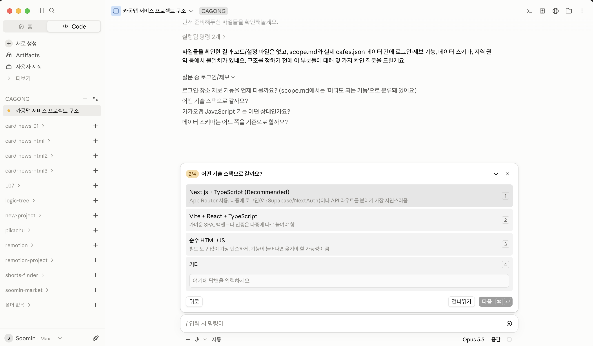
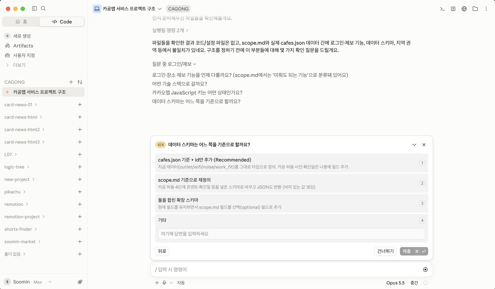
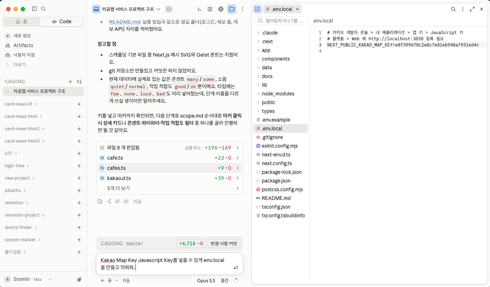

프로젝트 시작하기
Scaffolding: 프로젝트 구조 잡기
느좋카페 프로젝트 골격과 첫 지도 화면의 성공 기준을 잡습니다.
얻어갈 것
앞에서 확인한 장소 데이터와 카카오맵 SDK 설정을 바탕으로 프로젝트 골격을 잡고 지도 화면을 확인합니다.
느좋카페 첫 구조
- 서버 프레임워크는 Next.js로 시작합니다.
- 데이터베이스는 Postgres(Supabase)을 사용합니다.
- 개발 서버는
http://localhost:3030에서 띄우는 기준으로 맞춥니다. - 첫 화면은 카카오맵을 띄우고, 장소 데이터의
lat,lng를 마커로 찍는 수준까지 계획합니다.
Next.js를 고르는 이유
이번 프로젝트에서는 프론트엔드와 백엔드를 한 프로젝트 안에서 같이 관리할 수 있는 Next.js를 선택합니다.
- 서버 사이드 렌더링(SSR)을 지원해서 검색 엔진에 잡힙니다.
- 하나의 서버에서 프론트엔드, 백엔드를 모두 개발할 수 있고 배포가 수월해 바이브코딩에 많이 사용됩니다.
아직 만들지 않을 것
- Postgres 데이터베이스 연결은 뒤에서 붙입니다.
- 카카오 로그인은 인증 챕터에서 붙입니다.
- 검색, 필터, 저장, 리뷰 같은 기능은 지도에 데이터가 보인 뒤 붙입니다.
AI에게 Scaffolding 요청하기
- 이전에 확인한 데이터와 카카오맵 설정을 바탕으로 "이런 지도 서비스를 만들 건데 우선 구조부터 잡아보려고 한다"는 맥락을 먼저 줍니다.
- 결과를 받은 뒤에는 코드보단 폴더 구조, 데이터 위치, 지도 컴포넌트 분리, 실행 방법이 명확한지 먼저 봅니다.
P1요구사항 문서로 지도 Scaffolding 계획 잡기
나는 현재 느좋카페 서비스를 만들려고 해 - 노트북 작업하기 좋은 카페를 지도에서 찾는 서비스 - 카페 위치, 영업시간, 콘센트, 와이파이, 소음, 작업 적합도 같은 데이터를 보여주기 - 사용자가 로그인해서 장소를 제보하고 추가할 수 있는 구조 - 포트번호는 3030으로 현재 준비한 것 1. 카카오맵 SDK 설정 2. data/cafes.json (지도 샘플 데이터) 3. docs/scope.md (구현 논의 문서) 우선 모든 기능을 한 번에 구현하지 말고, 프로젝트 구조부터 나랑 같이 잡아보자. 최종적으로 데이터를 읽어서 카카오맵 위에 마커로 보여주는 것까지 첫 구현 계획에 포함해줘. 모호한 것들이 있다면 나한테 질문하면서 진행해줘.
Claude Code가 제시한 계획(기능 범위·기술 스택·데이터 스키마)을 확인했다면, 아래 프롬프트로 그 계획대로 구현을 실행합니다.
P2확인한 계획으로 구현 실행하기
좋아, 계획 확인했어. 아래대로 진행해줘. - 로그인·제보 기능은 지도에 데이터가 보인 다음에 붙이기 - 기술 스택: Next.js + TypeScript (App Router) - 카카오맵 JavaScript 키는 .env.local에 있고 localhost:3030 등록됨 - 데이터 스키마는 data/cafes.json 기준 먼저 프로젝트 구조를 잡고, data/cafes.json을 읽어서 카카오맵 위에 마커로 표시하는 첫 화면까지 구현해줘. 작업이 끝나면 http://localhost:3030에서 확인하는 방법도 알려줘.
실제로는 Scaffolding에서 더 범위를 넓게 잡아도 됩니다. 강의에서는 단계별 이해를 위해 "프로젝트 구조 + cafes.json을 지도에 표시하는 첫 화면"까지만 성공 기준으로 둡니다.
Scaffolding 결과 확인하기
http://localhost:3030에서 첫 화면이 뜨는지 확인합니다.- 카카오맵이 빈 영역이 아니라 실제 지도 화면으로 보이는지 확인합니다.
cafes.json의 장소 개수만큼 마커가 찍히는지 확인합니다.- 마커나 카드에서 장소 이름, 주소, 작업 적합도 같은 기본 정보가 보이는지 확인합니다.
CLAUDE.md 생성하기
/init으로 CLAUDE.md를 처음 생성합니다.- 앞으로 CLAUDE.md에 주요 사항들을 업데이트할 예정입니다.
실습 화면으로 따라가기
앞 챕터에서 준비한 폴더로, 위 프롬프트를 사용해 Scaffolding을 진행합니다. 전체 과정을 화면으로 따라가 봅니다.






마무리
- Next.js 프로젝트 구조를 잡고 첫 지도 화면을 만들어 봤습니다.
- 다음에는 Git으로 코드 변경 이력을 관리하는 방법을 배웁니다.